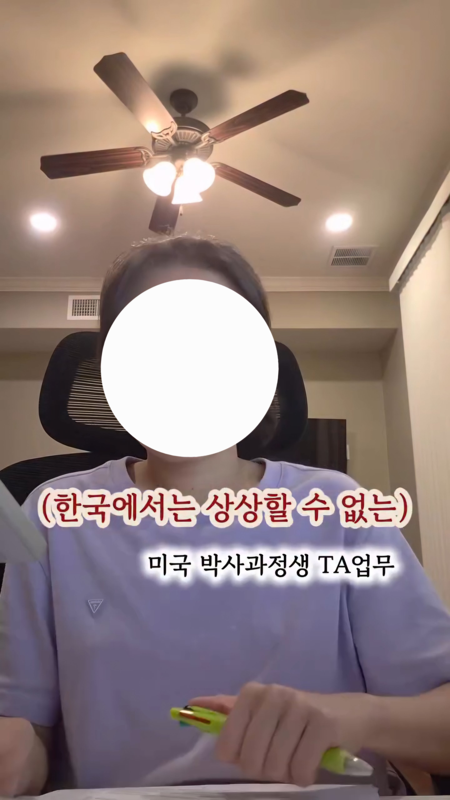
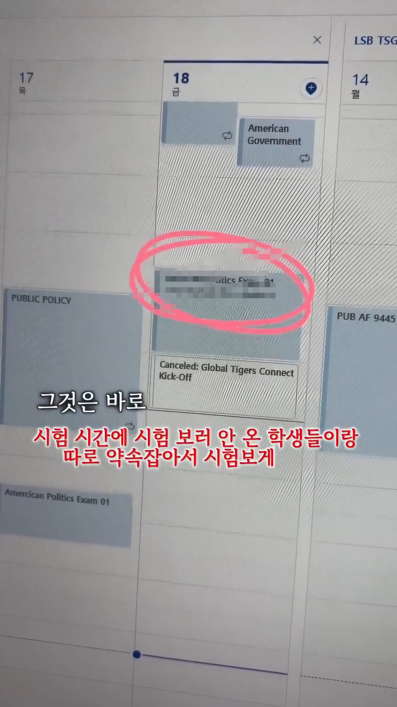
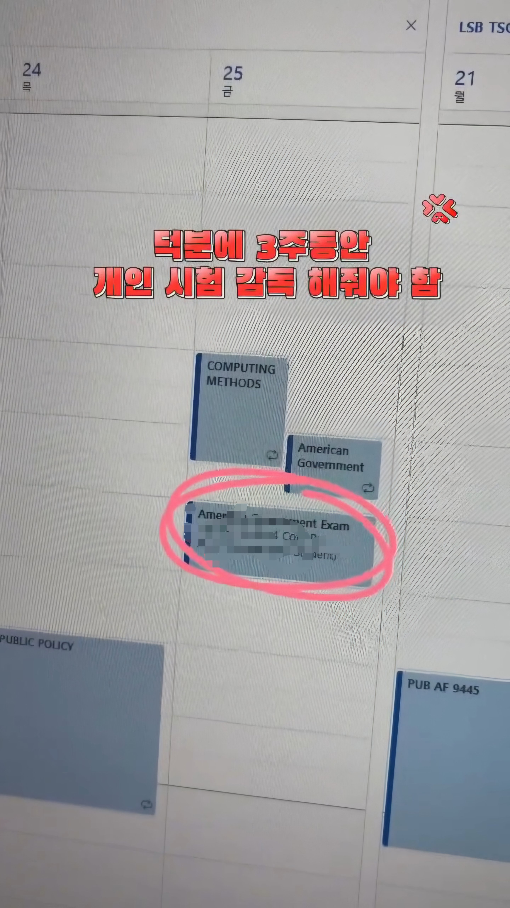
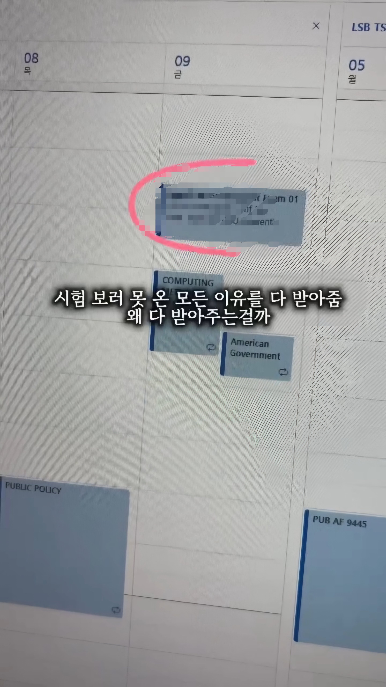
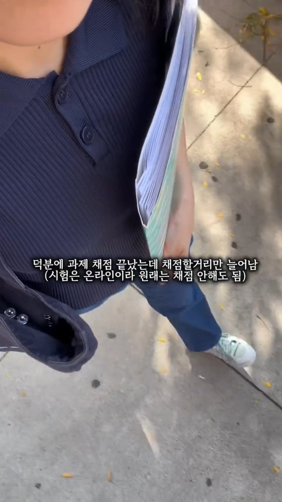
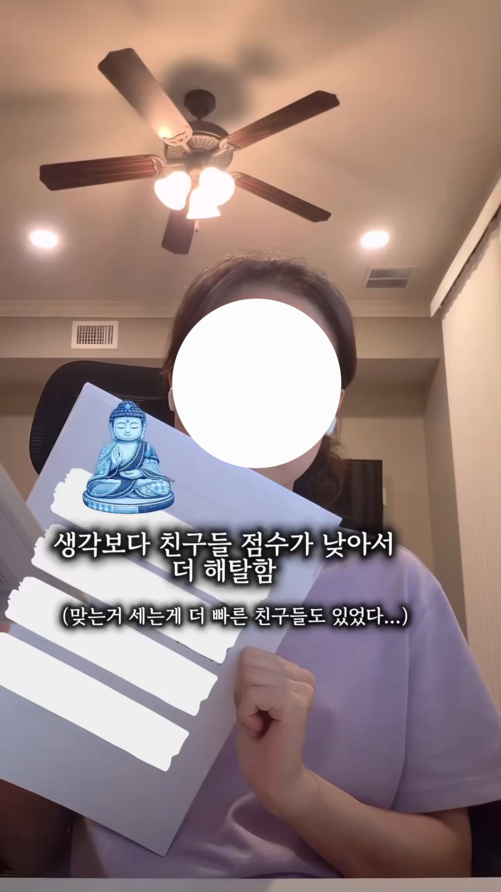

(해주기)






(해주기)




돈박아서 오시는 분들 특별관리 ㅋㅋ
아 그래서 교수님이 시험 안본애들 연락하라고 하시는거구나
우리나라는 저러면 학생들이 난리치지 않나?
고등학교에서는 이미 저렇게함. 시험을 못보게 된게 더 큰 민원사례라. 지필말고 수행은
본인 사유로 못보면 결시생에 대한 인정점 기준 학교별로 다 있음
어차피 빡세서 그런거아님?
기회는 주는게 맞지않나싶은데
테스트 준비 기간이 모두에게 동등하게 주어져야 공평한거아닌가?
누구는 30일 공부하고 누구는 31일 공부할 수 있는건데
서비스업
시험문제 이미 알고있는거 아님? 바꿔서 내면 그거대로 불공평하다고 말나올것 같은데
교수들은 서비스 아님. 근데 teaching assistant들은 서비스직임 ㅠ 똑똑해서 자기 주도로 공부하며 교수한테 야한 냄새 풍기는 애들부터 빡대가리라 다 떠먹여주기 바라는 애들까지 별별애들이 다 신청하거나 ta시간에 가서 질문함. 걍 인간 gpt임
학생들 ‘고객’ 취급하는건 미국이 더하거든